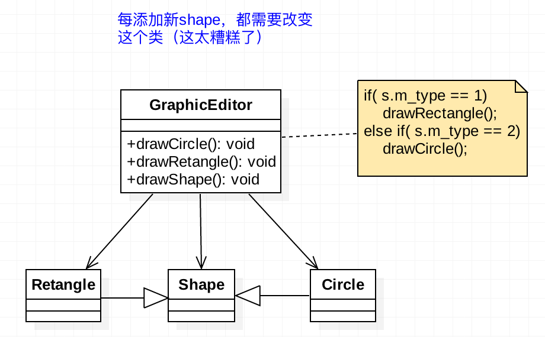

动机
开明的应用设计和代码书写部分应当关注应用在发展和维护阶段中频繁发生的变化。通常，给应用添加一个新功能的时候会涉及到很多改动。应尽量少地在已有代码中做改动，因为已有代码一般都已通过单元测试，在其中做的改动可能莫名其妙地就影响到现有功能。
开放 - 封闭原则 强调设计和代码编写应当以在现有代码上改动最小的方式来完成新功能的添加。软件设计应尽可能在添加新功能类的时候不去改动现有代码。
目的
软件实体，如类、模块和函数，应当对扩展开放，但对修改关闭。
个人理解：对使用方的修改关闭， 对提供方的功能扩展开放
例子
以下是一个违背 OCP 的例子。 它实现了绘制各种图形的graph editor。 显然，GraphicEditor 没有遵循 OCP ，因为每次添加一个 shape 子类，都要对其进行修改。这有以下几个缺点：
- 每次添加新的
shape，GraphicEditor的单元测试都要重新做 - 每次添加新的
shape类所需时间都比较多，因为开发人员需要理解GraphicEditor的内部逻辑 - 尽管新添加的
shape能很好的工作，但它可能会意外地影响现有功能
